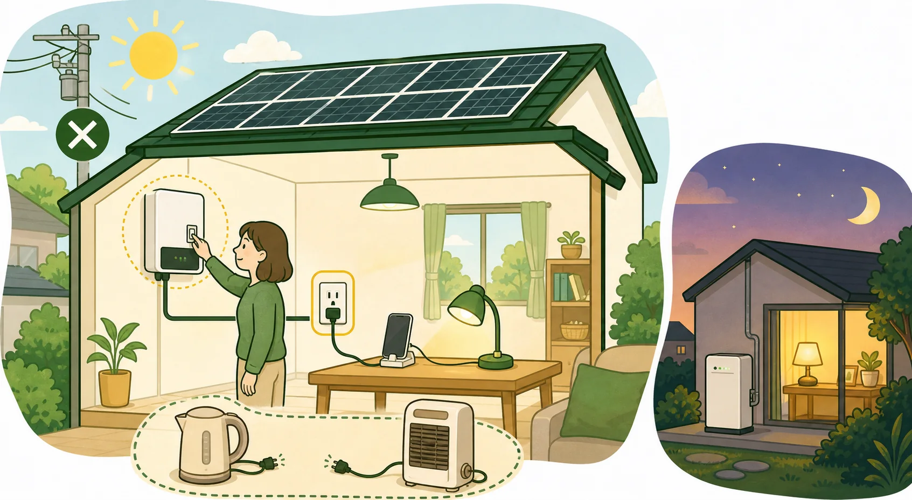

この記事で分かること
自立運転：停電時に太陽光を使うための機器と操作条件が分かります．
出力と蓄電池：太陽光単体の制約と蓄電池を組み合わせた場合の違いを確認できます．
災害時の安全：破損・浸水時に設備へ触れず，優先する行動を整理できます．
「停電中も家全体の電気を使えるのか」「どの家電まで動かせるのか」「蓄電池がないと役に立たないのか」．太陽光が載っていても，停電時の給電方法と使える電力は通常時と同じではありません．
対応機器を自立運転へ切り替え，指定コンセントから，その時点の発電量と出力上限内で使います．夜間は太陽光単体では使えず，蓄電池を組み合わせても容量，出力および給電回路に制約があります．
採算と防災価値を分けて考える
はれトク診断では金銭的な収支を確認し，停電時の利用価値は別の判断材料として扱います．
停電時の給電範囲を確かめる
見積もりサービスの利用は無料です．現地調査費は施工会社・条件で確認します．
広告・アフィリエイトを含みます．
停電中に守りたい生活を決める
連絡手段の充電，照明，冷蔵庫など，優先して使いたい機器と必要な時間帯を整理します．昼間だけ使う機器と夜間にも必要な機器を分けておくと，太陽光単体で対応できる範囲と，別の備えが必要な範囲を確認できます．
停電時に使う条件
- パワーコンディショナ等が自立運転機能に対応している．
- 取扱説明書に従い，自立運転モードへ切り替える．
- 指定された自立運転用コンセントまたは対応回路を使う．
- その時点の発電量と機器の出力上限内で電気を使う．
操作方法はメーカーと機種で異なります．停電してから初めて確認するのではなく，平常時に取扱説明書，切替手順および使用できるコンセントを確認します．
太陽光単体の制約
停電すると，系統へ接続した通常運転は安全のため停止します．自立運転に対応する機器を取扱説明書どおりに切り替えた場合に限り，原則として日射がある時間帯に指定コンセント等から利用します．
- 夜間は発電しません．
- 曇天や雨天では使用できる電力が小さくなります．
- 大きな電力を必要とする機器を同時に使えるとは限りません．
- 停電時に家全体へ自動給電する構成とは限りません．

夜間や悪天候には，他の備えも確認する
モバイルバッテリーはPSEマークを確認し，モバイルバッテリーやポータブル電源はリコール情報，定格および回収方法を確認します．膨張，異臭または異常な発熱があれば使用を中止し，高温，強い衝撃および充電中の可燃物を避けます．不要になったリチウムイオン電池は家庭ごみに混ぜず，自治体の回収ルールに従います．携帯発電機は一酸化炭素中毒のおそれがあるため，屋内では絶対に使用しません．
蓄電池は出力・接続先・残量を確認する
蓄電池があれば，昼間に蓄えた電気を夜間等に利用できる可能性があります．ただし，残量，容量（kWh），同時に供給できる出力（kWまたはkVA），100 V・200 Vへの対応，接続回路，全負荷・特定負荷の方式およびモーター等の起動電流に制約があります．自動・手動の切替，復電時の復帰および瞬断の有無も機種ごとに異なります．「蓄電池があれば家中の機器を常に使える」とは限りません．はれトク診断では標準蓄電池を含む構成も比較できますが，停電時に使える時間や給電範囲は金銭的利益へ合算しません．
実際の停電事例から分かること
2018年北海道胆振東部地震後のJPEA調査では，蓄電機能を併設しない住宅用太陽光428件のうち364件，85.0％が自立運転機能を利用しました．冷蔵庫，炊飯器，携帯電話の充電およびポータブルテレビ等に使えたとの回答があります．ただし，設備容量，天候，接続負荷および利用時間の詳細は示されていないため，「太陽光単体で何日使えるか」へ一般化できません．
2019年台風15号による千葉県の停電では，4人世帯，太陽光8.16 kW，EV蓄電容量12 kWh，停電開始時の残量63％という住宅で，日中に太陽光から再充電しながら約5日間，照明や冷蔵庫等へ給電したメーカー報告があります．これは特定の設備構成，日射，負荷および運用条件による1事例であり，同じ容量なら5日間使えることを保証するものではありません．
注意点
破損・浸水した設備には近づかない
太陽光設備は，破損または浸水していても光が当たると発電する場合があります．感電の危険があるため，パネル，ケーブルおよびパワーコンディショナへ触れず，販売店・施工店等へ連絡してください．
設備に損傷がある場合は，自立運転を試さず，自治体や関係機関の避難・安全情報を優先します．
停電前に確認・練習・点検する
取扱説明書で操作を確認し，販売店・施工店に相談して，平常時に切替と復帰の手順を練習します．点検時には指定コンセント，接続できる機器および連絡先も確認します．自作配線や指定外の接続は行いません．
- 停電時にどのコンセントまたは回路へ給電できるか．
- 自立運転時の最大出力（kWまたはkVA）と，同時使用できる機器および起動電流．
- 切替と復電後の復帰が手動か自動か，瞬断が生じるか．
- 蓄電池を追加する場合の容量（kWh），停電時出力，100 V・200 V対応および全負荷・特定負荷の別．
- 災害による破損，雨漏りおよび第三者損害に対する保証・保険．
まとめ
停電時に太陽光を使えるかは，自立運転機能，切替方法，給電回路，その時点の発電量および出力上限で決まります．
平常時に取扱説明書と自立運転用コンセントを確認し，夜間や悪天候に備える電源は別に検討してください．破損・浸水時は設備へ触れず，避難・安全情報を優先します．防災上の価値は，診断の金銭的利益へ合算しません．
採算と防災価値を分けて考える
はれトク診断では金銭的な収支を確認し，停電時の利用価値は別の判断材料として扱います．
停電時の給電範囲を確かめる
見積もりサービスの利用は無料です．現地調査費は施工会社・条件で確認します．
広告・アフィリエイトを含みます．
参考文献
- 太陽光発電協会「停電時でも電気が使えます」
- 太陽光発電協会「長く使っていただくために」
- 太陽光発電協会「災害時における太陽光発電の自立運転についての実態調査結果」
- 積水化学工業「住宅の電力レジリエンス強化に向けたPV＋蓄電システムの役割」
- 資源エネルギー庁「あらためて学ぶ，停電の時にすべきこと・すべきでないこと」
- 経済産業省「自然災害による再エネ発電設備の事故防止及び保安管理の徹底」
- 消費者庁「モバイルバッテリーの事故に注意しましょう！」
- 消費者庁「携帯発電機やポータブル電源の事故に注意！」
- 環境省「リチウムイオン電池関係」
公開データ版を確認しています．